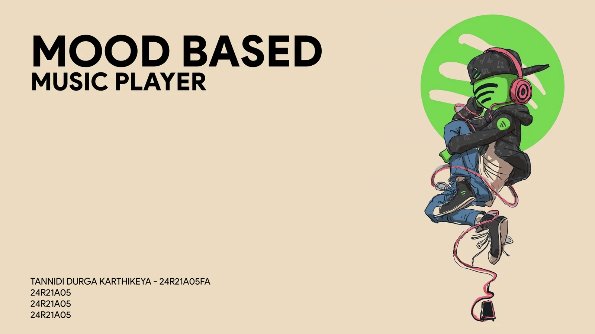

AI / Full stack
MoodMusic
A mood-based music player that connects emotion inputs with Spotify track recommendations.

The idea
Music discovery often starts with an artist or a song. MoodMusic starts with the listener’s mood and uses it to guide recommendations.
Three ways into the experience
The repository documents manual selection from six moods, text-based mood analysis with Google Gemini, and camera-based facial emotion recognition using FER and OpenCV. It also includes song search and playback controls.
Under the surface
A Python and Flask backend connects the emotion-processing features and Spotify Web API. The frontend uses HTML, CSS, and JavaScript. Spotify credentials and service configuration are required to run the complete integration.
Demo notes
The hosted application can take time to wake up after inactivity. Music access and playback depend on the external services and their account requirements. The cover above is the project presentation artwork, not a screenshot of the live player.